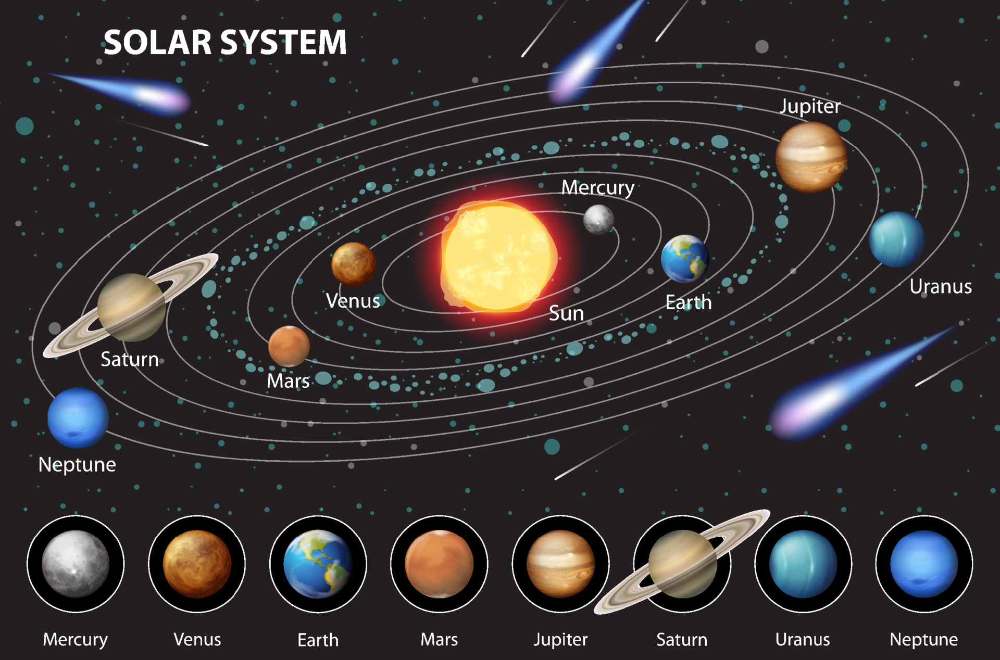

GITHUB SYNCE TEST!!Mercury is the smallest planet in our solar system and the closest one to the sun.
Because it is so close to the sun, it orbits around it faster than any other planet.
In fact, a full year on Mercury goes by in just 88 Earth days. Even though it is the
closest to the sun, it is actually not the hottest planet; that title belongs to Venus.
However, Mercury still gets extremely hot during the day, the temperatures reaching
up to 800 degrees Fahrenheit. At the same time, because it has almost no atmosphere
to trap heat, nighttime temperatures can plunge to a freezing minus 290 degrees. The
surface of Mercury looks a lot like Earth's moon because it is covered in craters,
cliffs, and plains. These craters were formed long ago when space rocks and comets
crashed into the planet. Mercury is a rocky planet, which means it has a solid surface
that you could theoretically stand on. It also has a very large iron core that takes
up most of the planet's interior. Two spacecraft, named Mariner 10 and MESSENGER, have
traveled to Mercury to take pictures and study it up close. Scientists are still
fascinated by this little rocky world and continue to learn new secrets about how our
solar system formed.
| Mercury contents | Value |
|---|---|
| Distance from sun | 36 million miles |
| Important metals | |
| Iron | Nickel |
| Silicon | Magnesium |
Very hot and dangerous clouds
Perfect for human life
| Earth contents | Value |
|---|---|
| Distance from sun | 93 million miles |
| Atmosphere Parts | |
| Nitrogen | Oxygen |
| Water Vapor | Carbon Dioxide |
Red planet dusty with two moons
Largest planet in our solar system
Planet with huge rings
Smells bad due to sufluric clouds
Last Planet named after the roman god of sea

Top 5 Moons in our solar system
Created by Adam
Note:the solar system is not for scale!